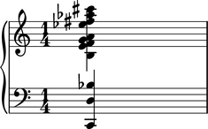

chord.split( )
Signature:
instances(chord, pitch = Pitch(b, 3), attr = 'number')
Description:
- return disjunct (treble, bass) pair of 'parts' from
chord - treble pitches greater than or equal to
pitchattr - bass pitches less than
pitchattr
Input contstraints:
- Input
chordis canonically a (many-note) chord - Input
chordmay also be a (one-note) note - Input
chordmay also be a (no-note) rest
Valid attr options:
'number''altitude'
Length treatment:
- zero-length parts engender rest
- length-one parts engender note
- parts of length greater than one engender chord
ID treatment:
- Unique return part IDs with input chord left unaltered
Spanners treatment:
- Helper returns unspanned output only
- Input
chordremains unaltered
Examples
abjad> chord = Chord([-24, -10, -2, -1, 4, 5, 7, 9, 15, 18, 20, 25], (1, 4)) abjad> treble, bass = chord.split(chord) abjad> group = PianoStaff([Staff([DynamicMeasure([treble])]), Staff([DynamicMeasure([bass])])]) abjad> group[1].clef = 'bass' abjad> show(group)